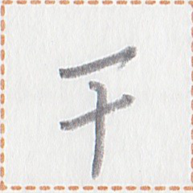

occurrences / 出现次数 / 出現回数 : 143
Words containing this character / 包含这个磷字的词语 / この燐字を含む語 :
| su1 | 銭 | noun | money | ||
| su1 mun1 | 銭無 | verb | to have no money | ||
| ian1 su1 {ie N} | 生銭 {於N} | verb | to buy {N} | ||
| sui1 su1 | 使銭 | verb | to buy | ||
| nam2 su1 hue | 開銭処 | noun | open-air market | ||
| su1 | 銭 | noun | zooh | ||
| hok1 su1 hue | 寝銭処 | noun | hotel | ||
| iam1 su1 hue | 口銭処 | place word | restaurant | ||
| su1 hue | 銭処 | noun | shop, store | ||
| su1 la1 | 銭軸 | noun | company | ||
| tu2 gau2 su1 hue | 遊刀銭処 | noun | toy store | ||
| su1 li1 | 銭倉 | noun | bank | ||
| let1 su1 | 雪銭 | noun | Yuesleone Ledge | ||
| ma1 su1 | 大銭 | verb | to be expensive | ||
| ni1 su1 | 小銭 |  | verb | to be cheap | |
| sep // su1 | 享 // 銭 | verb-object compound | to earn money | ||
| ak1 su1 hue | 書銭処 | noun | bookstore | ||
| su1 tu2 | 銭遊 | verb | to gamble | ||
| su1 | 銭 | noun suffix | price of ... | ||
| nan2 su1 | 何銭 | noun | interrogative | how much money | |
| det tia2 su1 hue | 種茶銭処 | noun | coffee shop, coffee house | ||
| tia2 su1 hue | 茶銭処 | noun | tea shop, tea house | ||
| nin1 su1 | 紙銭 | noun | banknote | ||
| hei2 su1 | 貧銭 | verb | to be poor |